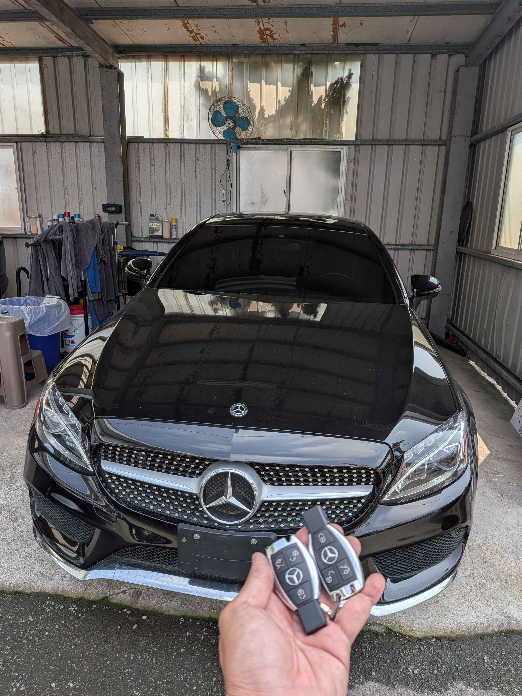
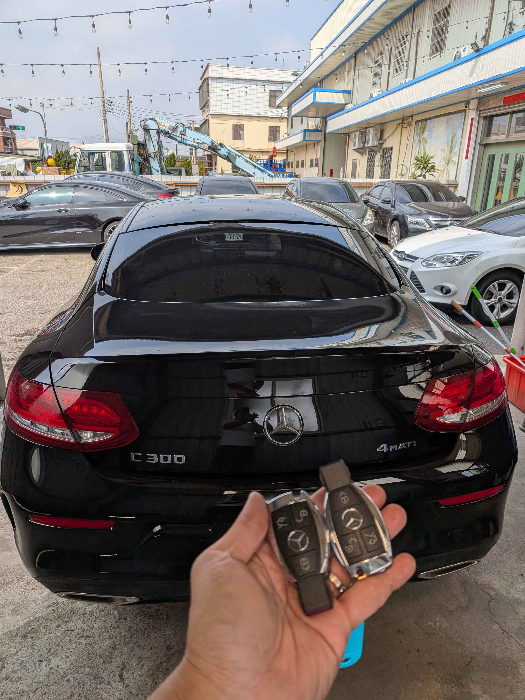

現場實拍：台中梧棲 2017 賓士 C300 智慧鑰匙匹配完成
台中梧棲地區賓士支援：專業現場匹配
本次極致核心技術團隊前往台中梧棲，為 2017 年 Mercedes-Benz C300 提供智慧鑰匙新增服務。車主為確保用車安全性，決定增配第二把鑰匙。我們攜帶專業解碼設備抵達現場，確保車主無需留車，當場即可完成所有匹配流程。

完工細節：全新高品質智慧鑰匙，功能完全同步
技術優勢：高效穩定的數據匹配
針對 W205 平台的 2017 年式 C300，極致核心職人透過專業診斷接口進行防盜數據讀取，並成功匹配全新智慧鑰匙。
- • 全面相容： 支援感應啟動與車門解鎖功能。
- • 現場作業： 台中梧棲現場服務，一小時內完工。
- • 專業保固： 提供的鑰匙皆經過嚴格測試，並享有完整的技術支援。
為什麼選擇極致核心 ProCore？
我們深耕中彰投，專精賓士、BMW 等歐系高階防盜系統。無論是鑰匙全丟救援還是備份新增，我們都能提供原廠等級的解決方案，讓您省時又省心。